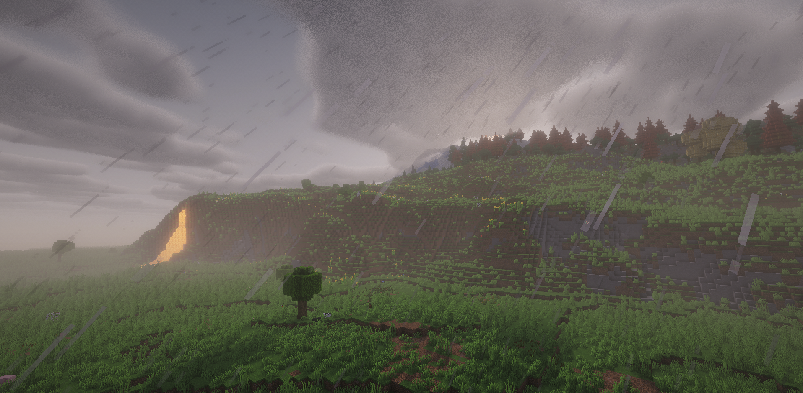

<!-- 1. ほかのページに飛ぶところ（ナビゲーション） -->
<nav class="nav-bar">
    <a href="home.html">ホーム</a>
    <!-- 今後ページが増えたらここに <a> タグを並べていく -->
</nav>
<link rel="stylesheet" href="home.css">

<!-- 2. どういうことやってるか（メインコンテンツ） -->
<main class="main-content">
    <h1>どういうことやってるか</h1>
    <p>ここに、このサイトの活動内容やMod解説の概要を書きます！</p>
    
    <div class="media-container">
        
        
        <div class="text-content">
        <h2>ここにタイトル</h2>
        <p>ここに、画像の隣に表示させたいテキストを書いていきます。</p>
    </div>
</main>